东京女学馆交流生×华乐团
上个星期的7月24日至28日间，东京女学馆日本交流生到访坤成中学进行文化交流。
在7月27日的联课活动期间，我们华乐团迎接了10位日本同学来到我们的乐室观摩我们日常的练习状况，让他们认识和了解中华文化。
我们也特别为他们献上我们比赛的曲目，让他们感受华乐歌曲的魅力。
最后，我们全团与日本学生们一同拍张大合照，留下难忘可贵的回忆。
6月回校活动
本团于学校假期的6月1日、6月2日及6月3日举办了回校活动。
大家都为了赶上进度和提高水准，从百忙之中抽空回校练习。
各组乐器的团员们也很努力专注地练习，为即将来临的比赛发挥最好的表现。
感谢各位团员的配合和教练耐心的教导，让本团这次的回校活动得以顺利进行!
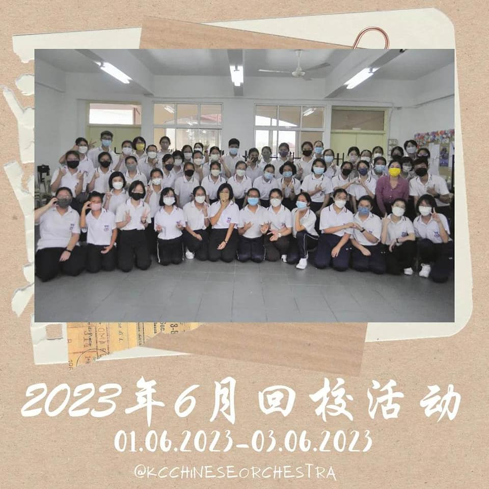
（大合照）
4月回校活动
在4月29日的回校活动中，本团有幸请来几位助教老师教导团员。
此次请来的助教老师有：饶顺意老师（大提琴），尤旨贤老师（笛子），罗欣怡老师（柳琴、阮）以及沈得信老师（琵琶）。
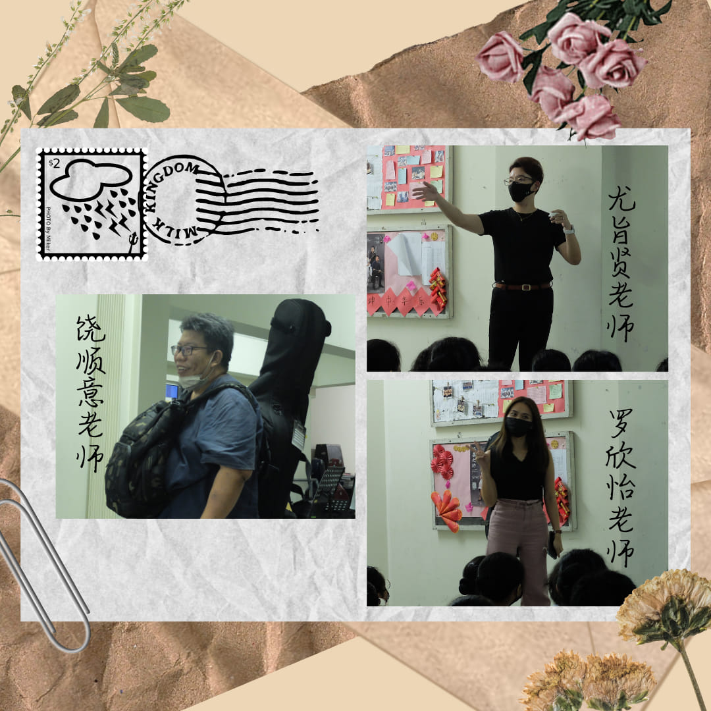
（助教老师们）
在这天，团员们都获益不浅。助教老师们教导了演奏乐器的技巧以及歌曲里的一些细节。
相信团员们都有所收获。在此希望团员们日后都不负教练及助教老师们的期待。
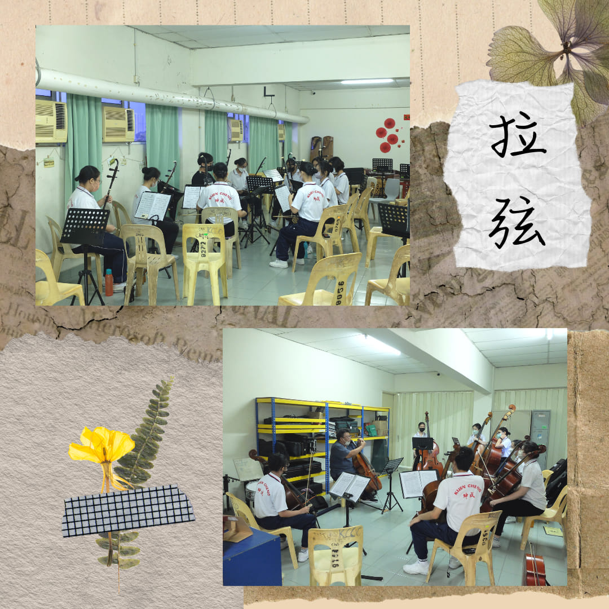


最后，感谢各位助教老师以及教练的帮助，亦感谢团员们的出席及配合，也感谢顾问老师的陪伴。
 （大合照）
（大合照）
开斋节表演
本团于2023年4月18日第二次下课在礼堂进行了开斋节表演。
校长、副校长、老师和同学们都纷纷聚集在礼堂共同欢庆开斋节和感受开斋节的氛围，观赏精彩的表演，本团的表演更是引人注目，赢得了全场宏伟的掌声！
再次感谢各位团员们的努力和配合，让这次的表演得以顺利进行！
在此祝各位马来同胞们开斋节快乐，也祝大家假期愉快！
2023年迎新会
2023年4月6日下午3时15分至5时05分，坤中中学华乐团举办了一年一度的迎新会，与去年不同的是，华乐团终于迎来了实体的迎新会，相信团员们期待已久。迎新会以分组破冰作为活动的开始，团员们分组依次进行自我介绍并且互相交流以熟悉彼此。
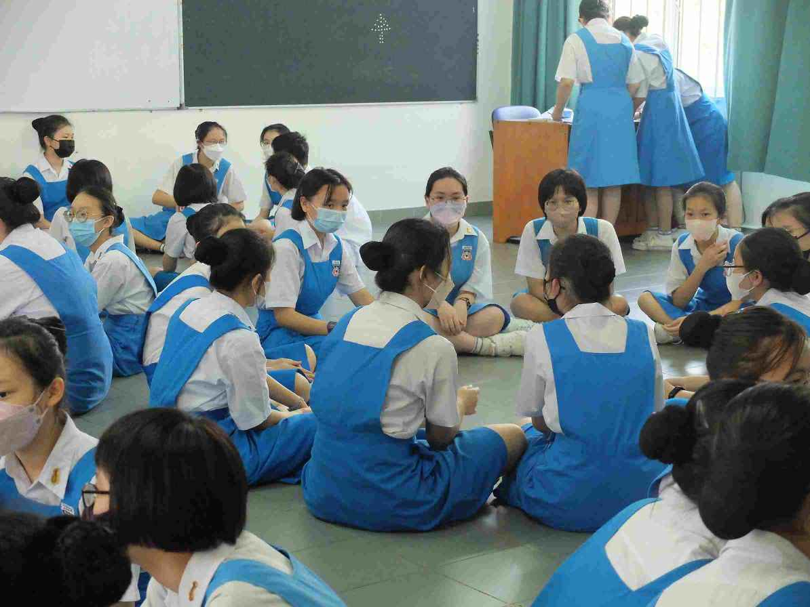
图一：分组破冰环节
接着，团员们进行了三项团康游戏，分别是连连看、369报数游戏、数字炸弹。期活动进行间，课室里都传出团员们的欢声笑语。
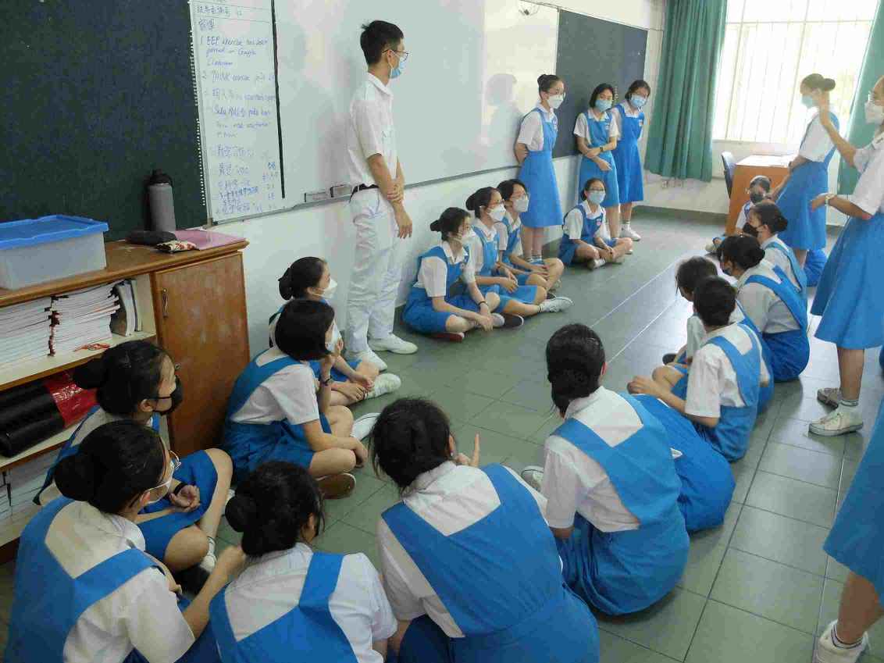
图二：团员们之间的互动
游戏结束后，大家先拍了大合照，把每个人的笑容刻在照片上。大合照后，迎来了团员们最期待的环节——下午茶。团员们有次序的领披萨以及饮料，随后便围坐在一起边吃边聊天，气氛好不热闹。
下午茶环节结束后，此次迎新会便迎来了尾声。华乐团学术给每人派发了迎新会礼物——书签作为纪念品，希望这份礼物可以陪伴团员们在华乐团的生涯。
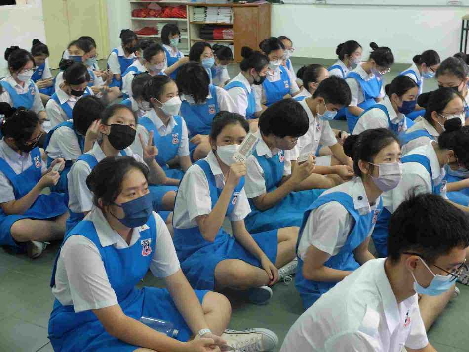
图三：派发社团书签
最终，迎新会在团员们的不舍下落幕，欢迎新生的加入，也祝所有团员能在华乐团学到新事物。
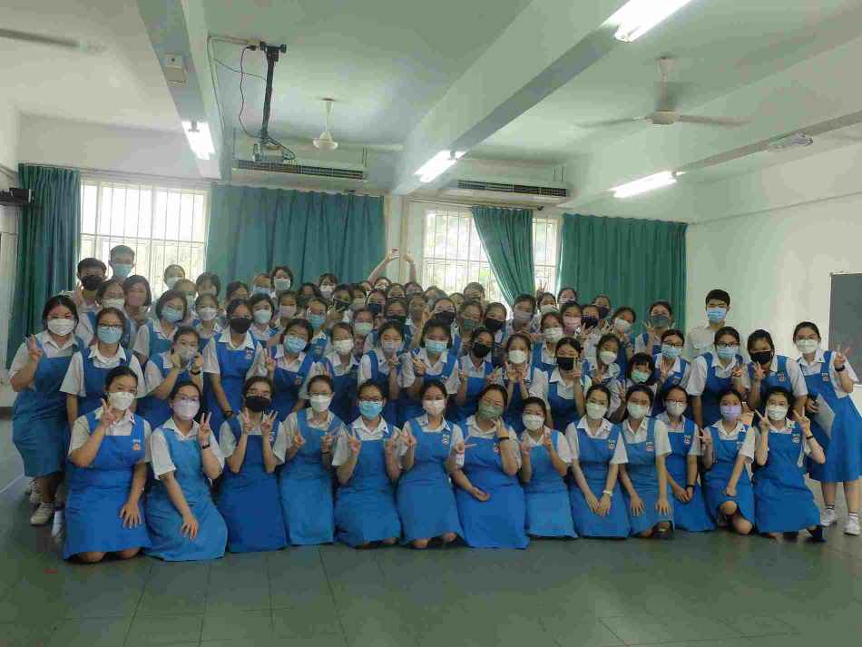
图四：大合照环节
2022年欢送会
为了欢送即将毕业或离校的团员，本校华乐团于2022年10月22日（星期六）上午8时至10时通过“Zoom”平台进行了线上华乐团欢送会。
这场欢送会由本团两位康乐主持。简单的开场白后，便是顾问老师与教练致辞，可惜的是他们都未能亲自出席欢送会，但好在有先前准备好的祝福语以及祝福影片。随后便是欢送影片环节，由各组亲自制作的诚意满满的欢送影片，送给即将离开坤成校园的学哥学姐们。
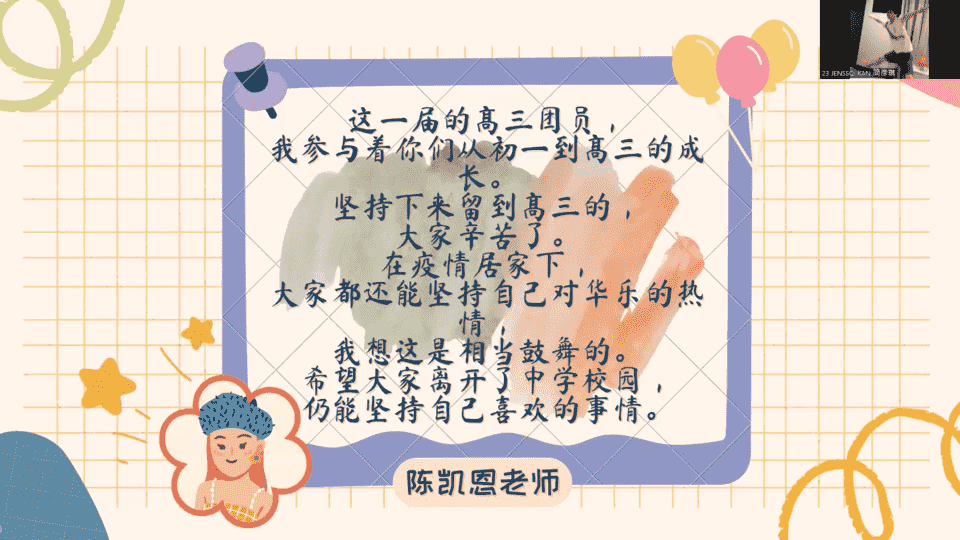
（图一：顾问老师的赠言）
接着，就到了毕业生及离校生发表感言的时刻。看完了组员送给他们的祝福影片后，都让他们想起了他们曾经在华乐团的酸甜苦辣咸。他们感触地讲着，虽然很多时候为了准备表演与比赛非常辛苦，但因为有华乐团这个充满温暖与爱的大家庭让他们留到了最后。他们也希望新生和旧生可以在华乐团当中找到乐趣，让中学生涯因华乐团而充实。
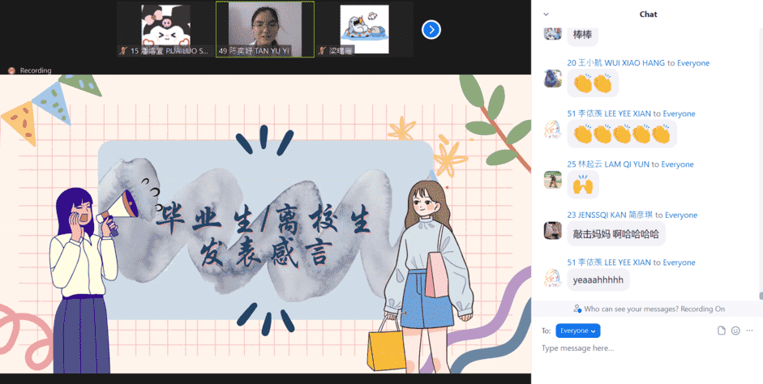
（图二：毕业生与离校生发表感言）
最后，大家在康乐的带领下拍摄大合照，为今年的欢送会画上句号。欢送会结束后，主席们也开放分组课室让各乐器组别进行交流。
至此，感谢华乐团毕业生和离校生的付出，很高兴缘分让我们在华乐团相遇，相知，相惜。祝福所有学哥学姐们前程似锦，一切顺利！
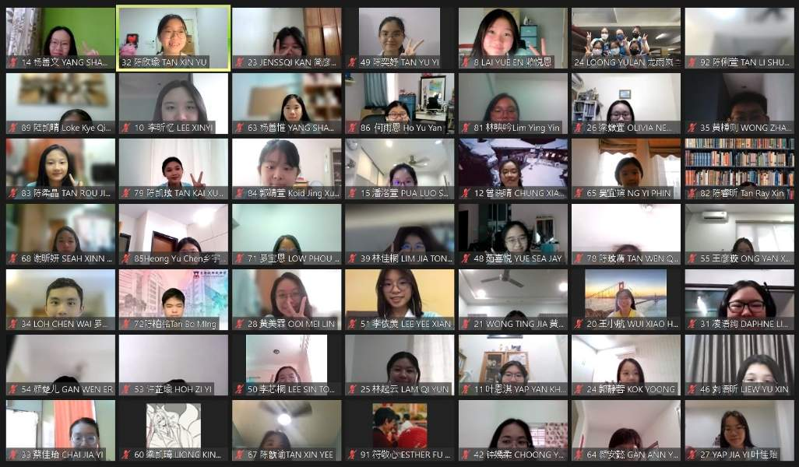
（图三：大合照）
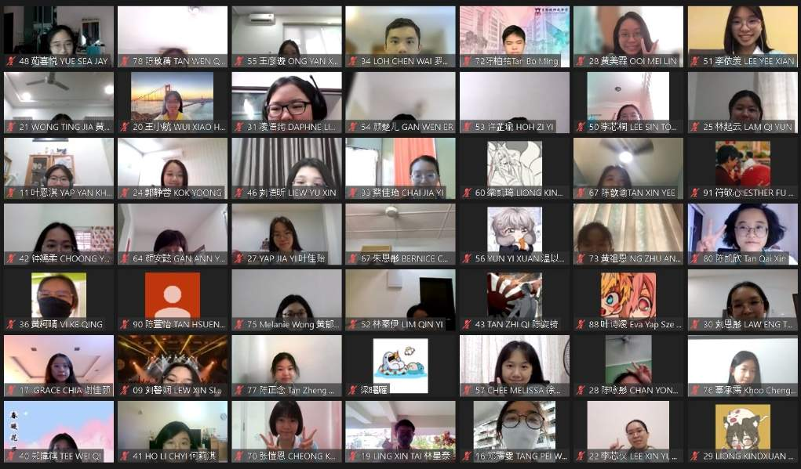
（图四：大合照）